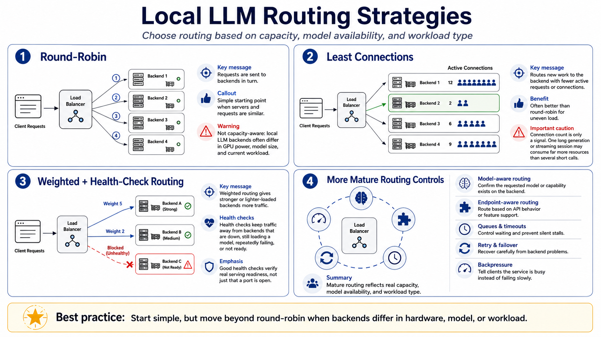

Load Balancing Strategies
Connecting to LMS... Progress: in progress

Narration
Round-robin routing sends requests to backends in turn. It is simple and can work when servers and requests are similar. Local LLM environments often are not that uniform. One server may have a stronger GPU, another may have a smaller model, and a third may already be busy with long-context work. Round-robin is easy to start with, but it is not capacity awareness.
Least-connections routing sends new work toward the backend with fewer active connections or requests. That can be better than round-robin, but it still needs caution. One long generation can consume more resources than several short calls. A streaming client may hold a connection open while tokens arrive slowly. Connection count is a signal, not a complete performance model.
Weighted routing lets stronger or lighter-loaded backends receive more traffic. Health-check-based routing prevents traffic from going to servers that are down, still loading a model, repeatedly failing, or not ready for the requested workload. Good health checks are more than checking whether a port is open; they should reflect whether the backend can actually serve the request.
More mature setups add model-aware routing, endpoint-aware routing, queues, failover, request timeouts, retry policies, and backpressure. Model-aware routing confirms that the requested model or capability exists on a backend. Backpressure tells clients the service is busy instead of allowing slow failure. The routing strategy should reflect real capacity, model availability, and workload type.